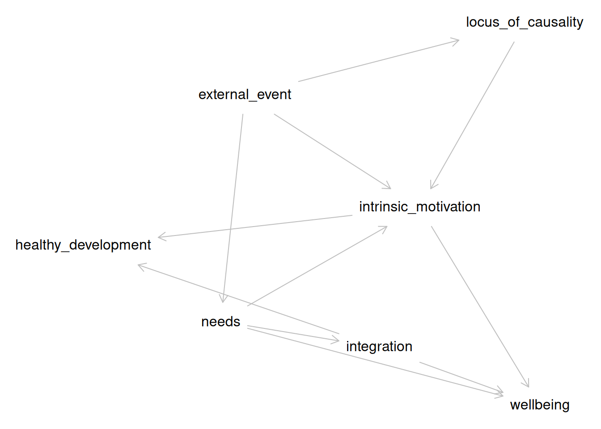
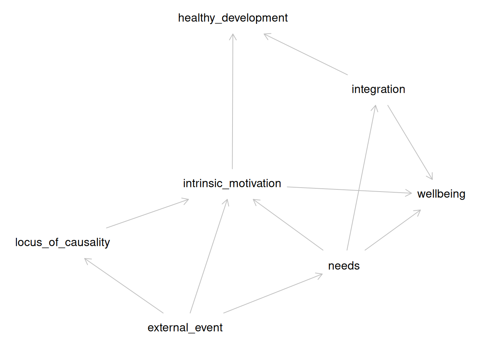

install.packages("theorytools")
install.packages("dagitty")
library(theorytools)
library(dagitty)Paul Meehl Graduate School Hackathon
Preparing for the Workshop
To prepare, please do two things:
- Set up your personal computer before the course starts.
- Bring a theory from/relevant to your own research. That is to say: A paper, book chapter, or notes that describe the theory.
Setup your computer
This vignette does not assume a prior installation of R, so it is suitable for novice users. You only have to perform these steps once for every computer you intend to use, and the entire process should take approximately 30 minutes if you start from scratch. In case some of the software is already installed on your system, you can skip those related steps.
First, follow this tutorial on how to set up your personal computer for worcs.
Then, run this code:
#> Welcome to WORCS: Workflow for Open Reproducible Code in Science. Run
#> `check_worcs_installation()` to make sure all dependencies are installed. For
#> more information, see the package vignettes
#> (<https://cjvanlissa.github.io/worcs/articles>) and accompanying paper: Van
#> Lissa and colleagues (2020) (<https://doi.org/10.3233/DS-210031>)Step 1: Select Sources
We will begin by selecting one “canonical version” of an existing theory, or draft your own theory from scratch (optional).
Credit: This exercise is based on the Proposition Based Theory Specification instructions [@glocknerPBTSGuidelinesTemplates2025].
Read pages 1-4 of the Proposition Based Theory Specification (PBTS) Guideline.
With your group, select source material for the theory (and specific version of it) to be specified.
- Decide which theory, and which version of the theory (e.g., original, revised, or latest) will be specified, including the name of the theory, the author, and the original reference. For example, I used Self-Determination Theory, a leading theory of motivation in social psychology.
- Select one canonical source for the theory specification (e.g., the original article or book chapter). If the theory is not fully specified in one source, or if you are drafting your own theory from scratch, select 2-3 key sources instead, such as relevant journal papers, or textbook chapters. For example, I used @ryanOxfordHandbookSelfDetermination2023.
- If the original theory is highly extensive (e.g., published as a book), simplify the task by focusing on its core content as represented in typical journal articles or summary chapters.
- Select specific lines within the source material that cover the theory’s key causal relations, concept definitions, operationalizations, and auxiliary assumptions. Create a spreadsheet like this with these selected sentences, label them (e.g., S1) and document the paper, page number, and ideally line number. The final version of Table 1 should include all agreed sources with page/line information, DOI, and, for books, the edition used. For example, see this spreadsheet
- All raters should agree on the selected sources. In cases of uncertainty, debate whether the sentence is indeed relevant to the theory.
Roll Your Own Theory
The exercise assumes that you will select an existing theory to improve upon. If you draft your own instead, go through all the steps as if you are starting from an existing theory - but instead of selecting sources from a published theoretical paper, you write your own.
You may find it helpful to:
- Select relevant quotes from empirical papers instead, to substantiate the assumptions of your theory.
- Compare your work to that of others/groups who have started with an existing theory.
Step 2: Code IF-THEN statements
Next, you will extract IF-THEN statements from the sources you selected in Step 1.
Individually, fill out Table 2. Translate each source sentence into a set of implications (i.e., IF- THEN statements) and all included propositions that together fully describe the theory.
- Propositions are statements concerning measurable and non-measurable concepts that can be true or false, and represent an implication’s antecedence and consequence. E.g., “A person’s needs are satisfied” is a proposition.
- Propositions can be combined by any logical or mathematical operators, qualifiers, or, if necessary, user-defined uncommon operators (that have to be defined and operationalized).
- It is often possible to make certain conditions of a theory either part of the propositions or the definition/operationalizations. To keep the propositions simple, these conditions should be part of the definition/operationalizations if they do not belong to the core causal relations of the theory.
- In this step, remain as close as possible to the original verbal narrative while interpreting the text in accordance with the authors’ intended meaning.
- In the “Reference” column, reference the label of the text snippet from Step 1, e.g. S1, S2 … Sn.
- If the original specification mentions the functional form of a relationship, put this information in the Comment column.
Combining Specifications-BINGO
As a group, read each other’s specifications. Select one participant’s work to be the “starting point” for the definitive version. The author of this version reads each of their implications aloud. Other participants put a check mark in front of their implications if these match the implication read by the first participant. If they are clearly similar but there are important differences - discuss these and find agreement on which version of the implication to keep in the definitive version.
When the first participant is done reading all of their implications, the other participants may have some remaining un-checked implications. That is to say: Implications that they coded, but the first participant did not. Discuss these to check whether they should be included in the definitive version or not.
The end product should be a complete table of all unique implications that all participants (more or less) agree upon.
Roll Your Own Theory
If you are making your own theory, do the exercise as described above - but instead of coding selected sentences, each participant lists all implications that they think should be part of the theory. The group activity then constitutes of discussing these and finding agreement about a set of implications.
Step 3: Making a DAG
Next, you are going to translate your IF-THEN specifications into a graph—the technical name is a Directed Acyclic Graph (DAG). In this graph, you connect concepts (propositions, in the language of PBTS) with one-sided arrows to indicate the direction of causality.
Note that IF-THEN connections imply causal connections, so the statement “IF a person’s need for autonomy is satisfied THEN they experience well-being” implies a causal link of the form {autonomy satisfied} -> {well-being}.
Example: Self-Determination Theory
Let’s examine a snippet from self-determination theory, and code it for implied causality. The causes are coded in green, and outcomes in blue:
“For these natural, active processes of intrinsic motivation and integration to operate effectively toward healthy development and psychological well-being, human beings need particular nutriments – both biological and psychological (Ryan, 1995). In the relative absence of such nutriments, these natural processes will be impaired, resulting in experiences, development, and behaviors that are less than optimal” (Lange et al., 2012, p. 417)
The text is a bit ambiguous, and possibly redundant. We see that processes, in the first sentence, refers to intrinsic motivation and integration. This invites the question of the relationship between intrinsic motivation and integration - do they go hand in hand (i.e., just two examples of processes set in motion by nutriments)? Are they distinct but similarly related to other constructs? It’s not clear. Furthermore, in the second sentence, we find the word processes again, but this time without explicit reference to intrinsic motivation and integration. For now, we will assume that intrinsic motivation and integration are distinct but have similar relationships to other constructs, and that the word is used consistently across both sentences.
Nutriments is defined elsewhere in the text - it appears to refer to refer to the three basic needs, as well as biological necessities.
Experiences, development, and behaviors is not well-defined, but we might assume it refers back to healthy development and psychological well-being.
In Step 2, we learned to code snippets like this for IF-THEN connections according to PBTS. This would give the following codings:
| N | IF | THEN | Original |
|---|---|---|---|
| 1 | nutriments are absent | intrinsic motivation AND integration are impaired | “For these natural, active processes of intrinsic motivation and integration to operate effectively toward healthy development and psychological well-being, human beings need particular nutriments – both biological and psychological (Ryan, 1995). In the relative absence of such nutriments, these natural processes will be impaired, resulting in experiences, development, and behaviors that are less than optimal. (Deci & Ryan, 2012, p. 417) |
| 2 | [intrinsic motivation OR integration] is present | healthy development AND psychological well-being take place | “For these natural, active processes of intrinsic motivation and integration to operate effectively toward healthy development and psychological well-being, human beings need particular nutriments – both biological and psychological (Ryan, 1995). In the relative absence of such nutriments, these natural processes will be impaired, resulting in experiences, development, and behaviors that are less than optimal. (Deci & Ryan, 2012, p. 417) |
| 3 | needs are satisfied or thwarted | psychological well-being of all people is affected | “The three basic psychological needs are universal such that their satisfaction versus thwarting affects the psychological well-being of all people.” (Deci & Ryan, 2012, p. 425) |
| 4 | rewards given | intrinsic motivation can decrease | “rewards do not always motivate subsequent persistence; indeed they can undermine intrinsic motivation” (Deci & Ryan, 2012, p. 417) |
| 5 | external event is expected to thwart the basic needs | external perceived locus of causality | “[Intrinsic motivation] could be either undermined or enhanced depending on whether the social environment supported or thwarted the needs for competence and self-determination. If a reward or other external event such as threat of punishment (Deci and Cascio, 1972), positive feedback (Deci, 1971), competition (Deci and Betley et al., 1981), or choice (Zuckerman et al., 1978) were expected to thwart these basic needs, it was predicted to prompt an external perceived locus of causality and undermine intrinsic motivation; but if the event were expected to support these basic needs, it was predicted to prompt an internal perceived locus of causality and enhance intrinsic motivation.” (Deci & Ryan, 2012, p. 418) |
| 6 | external perceived locus of causality | undermined intrinsic motivation | “[Intrinsic motivation] could be either undermined or enhanced depending on whether the social environment supported or thwarted the needs for competence and self-determination. If a reward or other external event such as threat of punishment (Deci and Cascio, 1972), positive feedback (Deci, 1971), competition (Deci and Betley et al., 1981), or choice (Zuckerman et al., 1978) were expected to thwart these basic needs, it was predicted to prompt an external perceived locus of causality and undermine intrinsic motivation; but if the event were expected to support these basic needs, it was predicted to prompt an internal perceived locus of causality and enhance intrinsic motivation.” (Deci & Ryan, 2012, p. 418) |
| 7 | external event is expected to support the basic needs | internal perceived locus of causality | “[Intrinsic motivation] could be either undermined or enhanced depending on whether the social environment supported or thwarted the needs for competence and self-determination. If a reward or other external event such as threat of punishment (Deci and Cascio, 1972), positive feedback (Deci, 1971), competition (Deci and Betley et al., 1981), or choice (Zuckerman et al., 1978) were expected to thwart these basic needs, it was predicted to prompt an external perceived locus of causality and undermine intrinsic motivation; but if the event were expected to support these basic needs, it was predicted to prompt an internal perceived locus of causality and enhance intrinsic motivation.” (Deci & Ryan, 2012, p. 418) |
| 8 | internal perceived locus of causality | enhanced intrinsic motivation | “[Intrinsic motivation] could be either undermined or enhanced depending on whether the social environment supported or thwarted the needs for competence and self-determination. If a reward or other external event such as threat of punishment (Deci and Cascio, 1972), positive feedback (Deci, 1971), competition (Deci and Betley et al., 1981), or choice (Zuckerman et al., 1978) were expected to thwart these basic needs, it was predicted to prompt an external perceived locus of causality and undermine intrinsic motivation; but if the event were expected to support these basic needs, it was predicted to prompt an internal perceived locus of causality and enhance intrinsic motivation.” (Deci & Ryan, 2012, p. 418) |
We can translate these IF-THEN statements into causal links between specific constructs.
This translation reveals some ambiguities. For example, each IF-THEN relationship is often repeated twice; once phrased in the positive and once in the negative. Many propositions are repeated, once phrased in a positive way, and once phrased in a negative way. For example, human beings [need] nutriments […] for these processes to operate positively phrases a link from nutriments to processes, whereas In the [absence of] nutriments […] processes will be impaired negatively phrases the same link. This can be confusing, especially if the two phrasings differ slightly. Here, it seems safe to assume that both sentences have the same meaning.
Another ambiguity is the lack of clear and consistent terminology. For example, in proposition #4, we see “rewards” are related to intrinsic motivation. However, in the remainder of the text, rewards are mentioned as just one example of “external events”. We assumed that “rewards” is used as an example of the broader class of external events (pars pro toto).
Another ambiguity: we read that “If [an external event] were expected to thwart [basic needs], it [prompts] an external perceived locus of causality”. Since the theory otherwise does not explain how people might “expect” that external events will affect them, and this seems to be more of a question for cognitive than social psychology - we made a simplifying assumption: external events affect needs, and also perceived locus of causality.
We applied two transformations:
- Replace the original text with concept labels, e.g. “nutriments are present” and “needs are satisfied or thwarted” are both replaced with “needs”.
- After this simplification, remove redundant links
| from | to |
|---|---|
| needs | intrinsic_motivation |
| needs | integration |
| intrinsic_motivation | healthy_development |
| intrinsic_motivation | wellbeing |
| integration | healthy_development |
| integration | wellbeing |
| needs | wellbeing |
| external_event | intrinsic_motivation |
| external_event | needs |
| external_event | locus_of_causality |
| locus_of_causality | intrinsic_motivation |
We translated this table to a DAG:
We can plot the DAG as follows:
plot(SDT)
#> Plot coordinates for graph not supplied! Generating coordinates, see ?coordinates for how to set your own.
Do It Yourself
Following the example above, you will perform three tasks:
Group Propositions into Concepts
Make a copy of your Step_2.csv table, and call it DAG.csv.
With your groupmates, discuss:
- Which of the propositions (i.e., the text in the IF- and THEN-columns) are really the same? E.g.: Are “autonomy satisfaction” and “people feel more independent” really the same?
- Are any of them really the same, but positively vs negatively phrased (e.g., “autonomy satisfaction” and “frustration of the need for autonomy”)?
- How would you name them if you merged identical propositions? E.g., you could use
autonomy_satisfaction, or you could go even more abstract and useneed_satisfaction, in which case you would use the same label for “autonomy satisfaction”, “competence satisfaction”, and “relatedness satisfaction”.
Obviously, these examples are based on SDT; use your own theory for this exercise.
Note: For technical reasons, it is preferable to use short labels without any spaces or special characters. So use need_satisfaction , not satisfaction (of different needs, like autonomy).
Revise your Table
Now go through your table, DAG.csv, and replace every original text with the labels you decided on in the previous step.
Make DAG in R
Run the following code line by line:
library(theorytools)
library(dagitty)
my_theory <- read.csv("DAG.csv", stringsAsFactors = FALSE)[, c(2:3)]
names(my_theory) <- c("from", "to")
# Remove redundant statements
my_theory <- my_theory[!duplicated(my_theory), ]
my_theory <- dagitty(
paste0("dag {",
paste0(my_theory$from, " -> ", my_theory$to, collapse = "\n"),
"}")
)
plot(my_theory)Step 4: Bring it to Life
The vignette Formalizing Self-Determination Theory describes how the original Self-Determination Theory [@deciSelfDeterminationTheory2012] was translated into a DAG. A DAG is a diagram that specifies the causal relations proposed by a theory. Such diagrams can be used to derive hypotheses, select control variables for causal inference, and conduct simulation studies (as we will do now).
library(theorytools)
library(dagitty)
sdt <- dagitty("
dag {
external_event
healthy_development
integration
intrinsic_motivation
locus_of_causality
needs
wellbeing
external_event -> intrinsic_motivation
external_event -> locus_of_causality
external_event -> needs
integration -> healthy_development
integration -> wellbeing
intrinsic_motivation -> healthy_development
intrinsic_motivation -> wellbeing
locus_of_causality -> intrinsic_motivation
needs -> integration
needs -> intrinsic_motivation
needs -> wellbeing
}")
sdt
#> dag {
#> external_event
#> healthy_development
#> integration
#> intrinsic_motivation
#> locus_of_causality
#> needs
#> wellbeing
#> external_event -> intrinsic_motivation
#> external_event -> locus_of_causality
#> external_event -> needs
#> integration -> healthy_development
#> integration -> wellbeing
#> intrinsic_motivation -> healthy_development
#> intrinsic_motivation -> wellbeing
#> locus_of_causality -> intrinsic_motivation
#> needs -> integration
#> needs -> intrinsic_motivation
#> needs -> wellbeing
#> }We can also plot this DAG:
plot(sdt)
Discuss with your group:
- Which portions of the DAG are relevant to the phenomenon you’ve identified?
- Make a simplified version of the DAG that leaves out all irrelevant components.
- Is the simplified DAG sufficient to explain your identified phenomenon? If it helps, think of the arrows as IF/THEN links. If the causes are present, does the outcome always follow?
- If not: What additions would you need to make to the DAG to properly describe the phenomenon?
Formalize the Initial Theory
We will construct a very basic formalization for the section of SDT that you have selected.
First, we will simplify the DAG. You can do this by hand; suppose we are interested in studying the effect of intrinsic motivation on well-being. We do not need the entire theory to hypothesize about this specific relationship. We can simplify the DAG to derive a restricted version of the theory that includes all variables that might confound the relationship of interest between intrinsic motivation and well-being:
sdt_pruned <- dagitty("
dag {
intrinsic_motivation -> wellbeing
external_event -> intrinsic_motivation
needs -> intrinsic_motivation
needs -> wellbeing
}")
sdt_pruned
#> dag {
#> external_event
#> intrinsic_motivation
#> needs
#> wellbeing
#> external_event -> intrinsic_motivation
#> intrinsic_motivation -> wellbeing
#> needs -> intrinsic_motivation
#> needs -> wellbeing
#> }Do the same for the phenomenon you identified. When you have done so, we can now create some code to generate a synthetic dataset based on this simplified DAG, using the simulate_data() function. This function samples random values for exogenous variables and computes endogenous variables as functions of their predictors (linear functions, by default). By default, regression coefficients are randomly sampled in the range [-0.6, +0.6] unless specific values are provided by the user. You might improve the model by choosing more realistic parameter values, for example, using the conventional values for null (0), small (.2), or medium (.4) effect sizes. By default, normal distributions are assumed for exogenous variables and residual error, unless other distributions are specified.
Here, we first generate the code, then examine it in the console, then write it to a file, and finally, run that file to create the simulated data.
sim_code <- simulate_data(sdt_pruned, n = 100, run = FALSE)
sim_code
#> [1] "# Set random seed"
#> [2] "set.seed(1859152410)"
#> [3] "# Set simulation parameters"
#> [4] "n <- 100"
#> [5] "# Simulate exogenous nodes"
#> [6] "external_event <- rnorm(n = n)"
#> [7] "needs <- rnorm(n = n)"
#> [8] "# Simulate endogenous nodes"
#> [9] "intrinsic_motivation <- 0.49 * external_event - 0.28 * needs + rnorm(n = n)"
#> [10] "wellbeing <- 0.14 * needs - 0.36 * intrinsic_motivation + rnorm(n = n)"
#> [11] "df <- data.frame("
#> [12] "external_event = external_event,"
#> [13] "intrinsic_motivation = intrinsic_motivation,"
#> [14] "needs = needs,"
#> [15] "wellbeing = wellbeing"
#> [16] ")"
writeLines(sim_code, "formal_model.R")
source("formal_model.R")Put this code into a separate R-file. When you run it all, it will create an object called df, which is a table with 100 observations for all variables. Each exogenous variable (causes) is generated by drawing random samples from a normal distribution. Each endogenous variable (effects) is generated by multiplying those exogenous variables with a regression coefficient; larger values mean that the exogenous variable has a larger effect. Then, random noise is added, which represents variability due to other causes not part of your model. If you want this random variability to be smaller, change the sd argument of the rnorm() function.
You can also make changes to your formal theory, to make it better produce the kind of data patterns that your phenomenon implies.
You will probably not have time to do so, but it is possible to make changes to the file "formal_model.R".
For example, you can generate a binary variable using rbinom(). For example, if you want to conceptualize external_event as the presence or absence of a reward, you could simulate a variable where approximately 50% of observations have a value of 0 and 50% have a value of 1:
external_event <- rbinom(n = n, size = 1, prob = 0.5)To make the effect of external_event on intrinsic_motivation depend on needs (e.g., does this external event satisfy needs?), add an interaction term to the equation that predicts intrinsic_motivation:
intrinsic_motivation <-
0.56 * external_event +
0.59 * needs +
0.80 * external_event * needs +
rnorm(n = n)The 0.80 specifies the strength of the interaction.
In this example, the effect of external_event on intrinsic_motivation becomes stronger as needs increases.
To create a nonlinear relationship, include a squared version of a variable:
intrinsic_motivation <-
0.56 * external_event +
0.59 * needs -
0.70 * needs^2 +
rnorm(n = n)The negative coefficient on needs^2 creates an inverted n-shaped relationship: intrinsic motivation initially increases with needs, but at sufficiently high levels of needs it begins to decrease. A positive quadratic coefficient instead produces a u-shaped relationship.
Step 5: Making it FAIR
This last step helps you make your theory FAIR. Use one computer to complete this tutorial together as a group. You will need to install some software in the process, so it’s easier to just do that on one system.
Learning Goals

As an example, we will continue to use the specification of Self-Determination Theory (SDT).
theory <- '
dag {
external_event
healthy_development
integration
intrinsic_motivation
locus_of_causality
needs
wellbeing
external_event -> intrinsic_motivation [form="external_event:needs"]
external_event -> locus_of_causality
external_event -> needs
integration -> healthy_development
integration -> wellbeing
intrinsic_motivation -> healthy_development
intrinsic_motivation -> wellbeing
locus_of_causality -> intrinsic_motivation
needs -> integration
needs -> intrinsic_motivation [form="external_event:needs"]
needs -> wellbeing
}'Creating a Project Folder
Create an empty project folder, which will become the theory archive. If we want to create a new folder called sdt in the existing folder ~/theories/, we can call:
project_path <- file.path("~/theories", "sdt")
dir.create(project_path)Adding a Shareable Theory File to the Repository
Your theory should be represented as a digital artifact, such as a structured plain-text document or a machine-readable file (e.g., ‘DOT’, ‘JSON’, ‘YAML’, ‘R’ code). You can simply write the text vector above to a plain text file, like so:
writeLines(theory, file.path(project_path, "theory.txt"))Documenting Reusability with a LICENSE
A license ensures that others know how they can legally reuse your work. We recommend a CC0 (Creative Commons Zero) license for FAIR theory, which waives all copyright protection and places your work in the public domain. This recommendation is based on the fact that copyright protection does not cover ideas, and the assumption that FAIR theory is created to maximize reuse. Other licenses are available, see https://choosealicense.com. You can add a license file to your repository like so:
worcs::add_license_file(path = project_path, license = "cc0")Documenting Interoperability with a README File
A README file describes the repository’s contents and purpose, making it easier for others to understand your theory’s potential for interoperability and reuse. The theorytools package contains a function to generate a README file with appropriate sections for FAIR theory, which can be used like so:
theorytools::add_readme_fair_theory(title = "Self-Determination Theory",
path = project_path)We encourage users to edit the resulting README.md file, in particular, to add relevant information about X-interoperability. For guidance on writing a README file for theory, see this vignette.
Adding ‘Zenodo’ Metadata to the Repository
In a later step, we will archive the theory on ‘Zenodo’. Creating a .zenodo.json file with metadata about your theory allows the project to be indexed automatically. This can be done by running:
add_zenodo_json_theory(
path = project_path,
title = "Self-Determination Theory",
keywords = c("motivation")
)Version Controlling The Project Folder
We will use ‘Git’ to version control the project folder. This means that changes to the files are explicitly tracked, and the entire history of the theory-project is logged. One participant in your group should install ‘Git’ on their computer, as explained here. You can verify that ‘Git’ is installed and working by running:
worcs::check_git()If this function shows a green checkmark, you can initialize version control in your project repository by running:
gert::git_init(path = project_path)Connecting to a Remote (‘GitHub’) Repository
To make your FAIR theory accessible to collaborators and discoverable by the wider community, you must connect your local ‘Git’ repository to a remote repository on a platform like ‘GitHub’.
Before proceeding, ensure that one of your group members has a ‘GitHub’ account. To authorize ‘R’ to interact with your ‘GitHub’ account, run usethis::create_github_token(), which takes you to a website to create a personal access token (PAT). Copy it, then run gitcreds::gitcreds_set() and paste the PAT when asked. If you still experience problems try usethis::gh_token_help() for help.
To check that you are ready to proceed, run:
worcs::check_github()If you see a green checkmark, you can create a new repository on ‘GitHub’ directly from ‘R’:
worcs::git_remote_create("fair_sdt", private = FALSE)This command will create a new public repository on ‘GitHub’ and link it to your local repository. The private = FALSE argument ensures the repository is public by default.
Either way, assuming the name of that repository is fair_sdt, you can connect it to your project folder as follows:
worcs::git_remote_connect(project_path, remote_repo = "fair_sdt")Pushing These Changes to the Remote Repository
Version control requires adding files to be tracked to the repository. The worcs function worcs::git_update() does this automatically, acting like a kind of “quick-save” or “save all” function:
worcs::git_update("First commit of my theory", repo = project_path)Check Your ‘GitHub’ Repository
Navigate to your repository on ‘GitHub’ and check that all committed files, including the theory file, license, README, and ‘Zenodo’ metadata, are now visible in the remote repository (green box in the image below).

Furthermore, the repository visibility must be set to “Public” to ensure that ‘Zenodo’ can discover and archive it. If you created the repository programmatically as shown above, it should already be public (see red box in the image above).
Login to ‘Zenodo’
Head over to zenodo.org. ‘Zenodo’ is a platform where you can permanently archive your code and other project elements. ‘Zenodo’ does this by assigning projects a Digital Object Identifier (DOI), which also helps to make the work more citable. This is different to ‘GitHub’, which acts as a place where the actual work on a project takes place, rather than long-term archiving of it. At ‘GitHub’, content can be modified, deleted, rewritten, and irreversibly changed, which makes it a bit concerning to be used for longer lasting referencing purposes. ‘Zenodo’ offers more security and permanence for research outputs.

One participant should create a ‘Zenodo’ account. You can login using your ‘GitHub’ account to make the registration process easy.
Authorize ‘GitHub’ to connect with ‘Zenodo’
On the ‘Zenodo’ website authorize it to connect to your ‘GitHub’ account in the ‘Using ’GitHub’’ section. Here, ‘Zenodo’ will redirect you to ‘GitHub’ to ask for permissions to use ‘webhooks’ on your repositories. You want to authorize ‘Zenodo’ here with the permissions it needs to form those links.

Select the Repository to Archive
Use the Zenodo Sandbox
You will now archive your project. This costs Zenodo some money and storage space. To be considerate, we will not really archive our project, but instead just practice archiving it in a “sandbox” environment.
You can access the sandbox environment by navigating to http://sandbox.zenodo.org/.
The links below already use the sandbox environment. If you ever need to properly archive something in the future, simply remove
sandbox.from the link addresses.
If you have got this far, this means that ‘Zenodo’ is now authorized to configure the repository webhooks that it needs to archive the repository and issue it a DOI. To do this, on the ‘Zenodo’ website navigate to the ‘GitHub’ repository listing page and simply “flip the switch” next to your repository. If your repository does not show up in the list, you may need to press the ‘Synchronize now’ button. At the time of writing, we noticed that it can take quite a while (hours?) for ‘Zenodo’ to detect new ‘GitHub’ repositories. If so, take a break or come back to this last step tomorrow!

Create a New Release
To archive a repository on ‘Zenodo’, you must create a new release. You can do this using the following code:
worcs::git_release_publish(repo = project_path)If you have not previously published any releases, this function will assume that you want to use semantic versioning for both the release tag and the release title. This means that the first release will be labeled with version number “0.1.0”. Each subsequent release will automatically increment the trailing digit, i.e.: “0.1.1”, “0.1.2”. If you make a major change to the theory, you may want to manually increment the middle digit like so:
worcs::git_release_publish(repo = project_path,
tag_name = "0.2.0",
release_name = "0.2.0")Verify on ‘Zenodo’
To verify that your release was archived on ‘Zenodo’ and assigned a DOI, you need to visit the Uploads tab.

Updating Meta-Data
We can further document our ‘Zenodo’ archive as a FAIR theory by adding some extra information on ‘Zenodo’. Note that, if you created a .zenodo.json file in a previous step, some of these metadata will be populated automatically. On ‘Zenodo’ click the Upload tab in the main menu, where you should find your newly uploaded repository.

Click the orange Edit button, and verify/supply the following information:
-
-
Is documented bya theory paper you wrote, in which you introduce this FAIR theory -
Is derived froman existing theory, which was published in print (paper, book chapter) but not made FAIR
-
-
Ryan, R. M. (Ed.). (2023). The Oxford Handbook of Self-Determination Theory (1st ed.). Oxford University Press. https://doi.org/10.1093/oxfordhb/9780197600047.001.0001
To save these changes, click ‘Publish’.
Verifying That ‘Zenodo’ Mints a DOI for Your Theory
After publishing a release, ‘Zenodo’ will archive the repository and mint a DOI. Verify this by checking the ‘Zenodo’ entry for your repository, where the DOI will be displayed. Include this DOI in any citations or references to your theory to enhance its discoverability and reusability.
The ‘GitHub’/‘Zenodo’ integration will assign one “mother-DOI” to the project, which will always resolve to the latest version, as well as a unique DOI to each version/release of the FAIR theory. This enables users to refer to and cite either the theory in general or specific versions of the theory. The list of authors for the citation is automatically determined by the ‘GitHub’ user account names used by the repository - this can be edited on ‘Zenodo’, as explained above. DOIs used in ‘Zenodo’ are registered through the DataCite service.
Pro-tip: Check the
Citationfield on the ‘Zenodo’ page, and copy-paste it into the README file of your ‘GitHub’ repo to make cross-linking even easier (or refer users to the ‘Zenodo’ page to find the citation, which obviates the need to manually update this information). Click the DOI badge in theDetailsfield to get instructions on how to add a clear highlighted DOI badge to your ‘GitHub’ repository, for users to see and make use of your DOI:
CONGRATULATIONS!
Your FAIR theory is now archived in ‘Zenodo’, and with a DOI that can be versioned to reflect updates to the repository version through time. You should be able to see details of this on the ‘GitHub’ ‘Zenodo’ page for your repository. This also means that your archived projects can get picked up by other indexing services and search engines that use DOIs too.
Providing a long-term archive and a DOI for your work is required for others to be able to properly cite it, as this provides basic citation metadata. For Open Science, it is important to be able to comprehensively cite the resources that you use in your research, including theory, and this workflow enables that to happen, in line with best practices. Making theory FAIR also helps elevate the standard of theory to that of the standard of other research outputs, like papers and software.
Checklist for citing your project
So now you have a sustainably archived ‘GitHub’ repository in ‘Zenodo’ that is ready to be re-used and cited! Before continuing, make sure that you have: